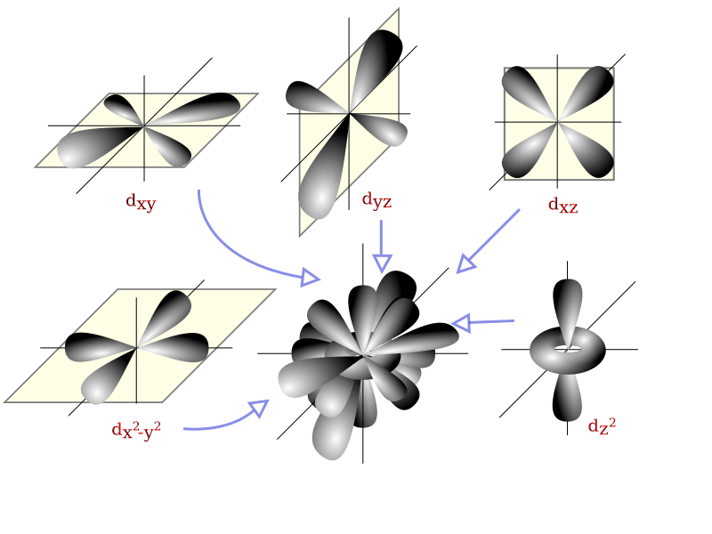
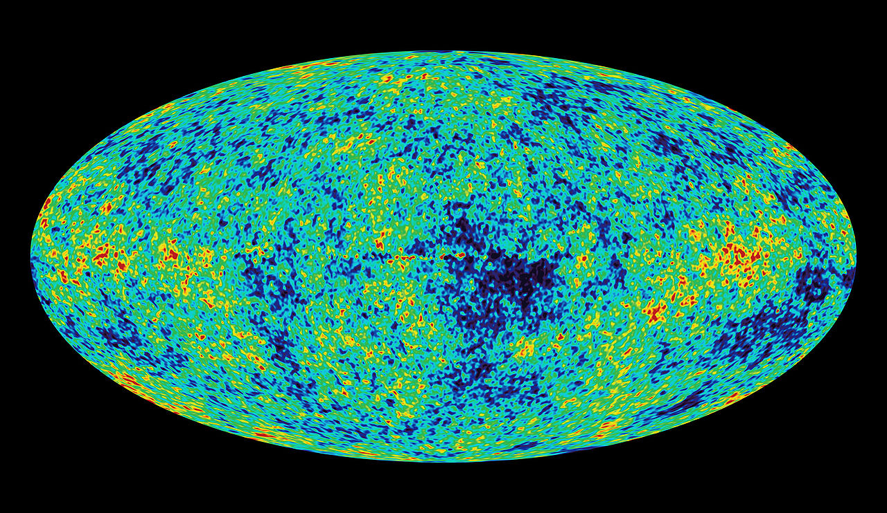

Statistical physics:
a journey through randomness
Florian Angeletti
NITheP
The "rules" of physics
Quantum mechanics
(small scale)

Classical mechanics
(medium scale)
General relativity
(large scale)

Statistical physics:
a strategy
for system with very large number of particles
A room full of air
~one octillion (100000000000000000000000000) molecules
One particle:
hand computation
1000 particles:
computer simulation
Position of all molecules in the room ≈ 100000000 Google storage capacity
How many particles in the front half of the room?
Either at the front or the back
Front or back: same probability
Add particles one by one
Typical fluctuation : 0.0000000000000001, 1part by quadrillion
No risk of spontaneous asphyxia
A lost ant lingers on a infinite plane
Every second, it takes a step in a random direction
Will it ever goes home?
Almost surely
(with an infinite amount of time )
Not true anymore for a flying ant
Don't fly nor time travel when you are lost
Pointless or meaningful? A difficult choice
Does time matter ?
Traffic jam-like model
Extreme events
What happens when the ant get lost forever?
How to predict millenial flood with only one century of data?
Thank you for your attention